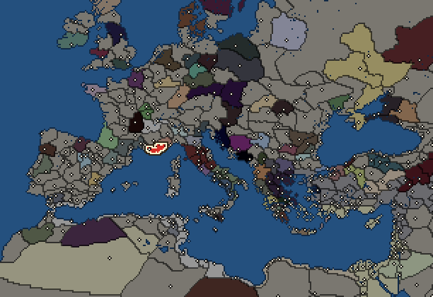
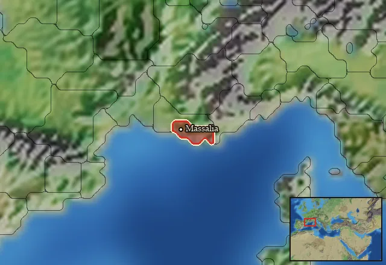

RTR: Imperium Surrectum
RTR: Imperium SurrectumMassalia


- difficulty Medium
- Greek culture
- believes
 Ionian
Ionian - 1 settlement
- capital Massalia
- 7,000 manpower
- 2 characters
- 16 faction units
- 431 regional units
The campaign brief
"The government under which the Massaliotes live is aristocratic, and of all aristocracies theirs is the best ordered" – Strabo, The Geography, 4.1.5
The Barbarians would seek to scare us, with their harsh language, their strange rituals, their curious outfits, and their fierce warriors. But we are no strangers to these shores. We will not be frightened.
It is now three centuries since Protis first came from Phokaia, the mother city, and ensnared the heart of Gyptis, the daughter of Nannus, King of the Ligurians. The King, perhaps seeing an opportunity in their union, gifted the newlyweds enough land for a city, and from this, Massalia was born. Our fortunes rose as Phokaia's declined – when it fell to the Persians (545 BC), fresh waves of settlers arrived, preferring our benevolent rule to that of the Achaemenid Emperors. Although the Gallic shore is perhaps not the most glamourous of locations, we have managed to carve out our niche, enriching ourselves as the primary trade stopover between Gaul and the Mediterranean states. Situated near the mouth of the Rhodanos (Rhone) River, we are well-positioned for trade far into the interior of Gaul, and our sizeable fleet keeps at bay the temptation of would-be pirates and raiders from the seawards side.
What of our strength of arms on terra firma? We are not a first-rate military power, but we are ready defend ourselves, if need be - we are, after all, trading with the Gauls. Our gallant citizens stand ready to form ranks as hoplites, and our coffers are deep enough to supply us with a strong mercenary force, should the need arise. We have built mighty walls to protect the city and have even pushed back the Gauls somewhat over the years, founding nearby fortress colonies to protect our corner of Gaul. We will not prove any pickings, should invaders seek our lands.
What, then, does the future hold? We have always been content to keep the Gauls at bay and be ignored by all the rest while making money off their merchants. But the winds of change are blowing, and perhaps this course will prove difficult to maintain. To the north, the Gauls, ever restless, are stirring. They seem more hostile than in previous generations, and may prove less content to tolerate our presence. And to the south, new powers are rising: Rome and Carthage, the new rulers of the Western Mediterranean, look set for a struggle for the ages. Who can tell what part we will play in that, and where we will stand once the contest is decided?
Starting diplomacy
Allied with (1):  Rome
Rome
Trade agreements with (1):  Rome
Rome
At peace with every other faction.
Like every faction, it is also at war with the  Free Peoples, who hold every settlement no faction does.
Free Peoples, who hold every settlement no faction does.
Faction mechanics
From the game's own guide. See also the other game guides.
Military reforms
Massalia has two reforms.
Massaliote reforms 1 requirements: Fight 10 battles
Unlocks: Thureophoroi, Thureophoroi Cavalry
Massaliote reforms 2 requirements: Own 15 cities.
Unlocks: Massaliote Thorakitai
Starting settlements
Massalia begins with 1 settlement and 7,000 manpower.
| Settlement | Region | Size | Manpower | Already built | |||||
|---|---|---|---|---|---|---|---|---|---|
| Massalia (capital) | Segobrigia | city | 7,000 | 13 buildings |
What is already built in each settlement
Massalia, in Segobrigia: Treasury, Governor's Palace, Small Stone Wall, Homeland, Region Information Scroll, Paved Roads, Local Market, Shipwright, Pottery Kiln (Urban), Vineyard (Rural), Basin Irrigation (Crops), Barracks and Armoury, Sewers (Sanitation)
Homeland
Massalia's homeland is 1 region. Only there can it install the Homeland government (more on homelands).

Starting characters
| Name | Role | Age | Name | Role | Age | ||||||
|---|---|---|---|---|---|---|---|---|---|---|---|
| Apollodoros | General | 44 | Aristonos | General | 24 |
Reforms
For every faction: Military innovations have arrived!, Second wave of military innovations have arrived!.
Units you can recruit
The same as in the main campaign.